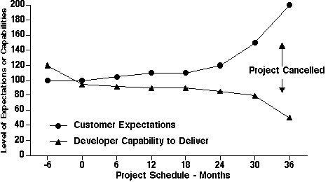
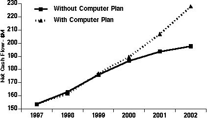

Aligning information systems to corporate
goals has emerged as the number one concern over the last five years
in surveys of information systems executives.
What does it mean that information technologies line up with the
business plans? How does one make alignment verifiable? How does one
judge the credibility of project proposals that compete for scarce
funds?
To line up information technology with business plans require the
adoption of the language used in dealing with financial matters. While
project managers may praise customer satisfaction, quality and
workflow simplification, CEOs and shareholders evaluate projects
primarily on the basis of contributions to net cash flow. Therefore,
alignment is the capacity to demonstrate a positive relationship
between information technologies and the accepted financial measures
of performance.
Market share, customer satisfaction, taking care of employees,
acting as good citizens, innovation and innumerable other virtues are
also essential. They are desirable, but only as the means for reaching
the objective of creating value that is ultimately measurable only as
a favorable financial outcome for a commercial enterprise.
Why Evaluation Comes First
Before an organization can begin to align information technologies,
management needs to know what evaluation methods are already in place
for alignment to be feasible. That requires passing a simple test: Are
the consequences of individual computer projects clearly linked with a
firm’s planning and budget commitments? If the answer is yes,
then computer investments have a chance of becoming catalysts of
organizational change instead of a discretionary expenses that doe not
have a provable benefit.
The effectiveness of a computer is largely dependent on its
capacity to enhance the health or worsen the malaise of organizational
units. The technical merits of computer equipment are of secondary
importance. This is why many of the methods and certainly the
statistical techniques carry a close resemblance to the practice of
diagnostic medicine or the analysis of socioeconomic phenomena.
Before one tries to prescribe solutions to problems, one must
necessarily understand and interpret the problems correctly.
How to Realize the Alignment of I.T. and
Business Plans
There are several requirements a firm must meet to ensure a
successful alignment. These must survive changes in organization, will
have to shift with re-directions in business goals and adapt to
changes in top leadership personalities.
Alignment Must Show
Enhancements to a Business Plan
Every computer project proposal should demonstrate the discounted
cash flow of its proposed business improvement. It should show the
high and low expected financial returns. A display of the ranges in
risks will enhance the credibility of the proposed venture.
Experienced executives must realize that computer-based changes in
business processes are perilous. They should not trust a forecast that
specifies a single target payoff number.
The business case should deliver its summaries as add-ons to the
previously approved financial budget. In this way the proponents can
be accountable for their documented promises. The actual results would
be then comparable to the revised budgets and performance plans at
stated intervals, such as monthly, quarterly and certainly not more
than annually.
Alignment Must Remain Updated as the Business Evolves
All project plans are subject to change. Approval of a proposed
investment is only the starting point for a continually widening gap
between the stated objectives and the capacity to deliver results.
There are no plans that can remain unaltered while an innovative
project is on its way. Customers will discover unanticipated
improvements. They will change what they had originally requested. The
completion schedule and the spending forecasts will also require
modification. Failed promises, human errors and unforeseen happenings
cannot show up even in superbly conceived plans.
To keep up with reality, approved plans need continuous adjustments
to avoid misleading management or creating self-delusions. Most
importantly, there must be a steady exchange in information between
the systems organization and everyone else. Without continuous
feedback the technologists will drift away from the business and
misalignment will prevail.

Gap between customer and developer widens with time
Alignment Must
Overcome Obstacles to its Purposes
There are no resource commitments that can remain fixed as the
scope of a project change and as new implementation problems surface.
All cost estimates and schedules for technology investments are
tentative targets. Nobody can predict the extent of customer or
employee resistance to business process innovations.
Resistance to change may come from hundreds of sources. Management
may not be able to change operating procedures, despite best
intentions. Implementation may run into difficulties in training the
operators to the desired standards of performance. A previously
disguised opposition from entrenched bureaucrats will scuttle even the
best-laid plans. Whenever that happens, it will certainly not appear
in the newspapers. It will remain covered up just as some family
episodes remain unseen and untold.
The recriminations, misunderstandings and confusion that take place
in most periodic project reviews are destructive to morale and to
careers. Budgets are summarily cut. Projects come to an abrupt
termination when management finally acknowledges that the effort is
out of control. There are too many examples of that happening. Perhaps
the largest and most notorious of such calamities is the chronic
failure of the Internal Revenue Service to acquire a functioning
information system. The estimated cost to the U.S. government from
this disaster is fifty billion annually.
Why to such disasters happen? The fault lies in the increasing
divergence between the assumptions at the conception of a project and
the reality that becomes visible only during execution. Initial
project plans must necessarily appear in terms that cannot be too
specific. The budget is a blanket to cover what is unknown. Not
everything that requires altering the information flows in a firm is
knowable in advance. When implementation starts, the tracking of
actual project events is always in great details. The expense
statements reflect every minute expense item.
The problem is that technical personnel find it easier to deal with
the minutiae because the larger economic and political issues are
mostly beyond the scope of their responsibilities. Planning by
telescope while implementing under microscope will assure that the
disparity between promises and results will always diverge as a
project progresses.
The evidence about the widespread incidence of problems in
executing computer projects comes from a recent survey. They showed
that thirty-one percent of all information technology projects
suffered cancellation before completion, at an estimated cost of $81
billion. Fifty-three percent of projects would suffer ninety percent
over-runs above original estimates, at a penalty of $59 billion. Only
sixteen percent of projects would show successful completion on time
and on budget.
Similar malfeasance was reported elsewhere. In a study of seven thousand systems and application development projects started since 1990, fifty-five percent had cost overruns greater than fifty percent; fifty percent required at least twice the estimated completion time and thirty percent were delivered with less than half of the originally planned capabilities.
This deplorable situation is worse in the case of large corporations. Here only nine percent of their projects came in on time and on budget. Even those projects that met these criteria of success delivered only about forty-two percent of the original features and functions. Frequent restarts were the single largest cause of these failures. For one hundred projects there were ninety-four restarts, which includes multiple efforts pursuing the identical objective. Poor planning, flimsy technology and ill-conceived designs explain almost all of such futility.
Alignment Must be Planned
The original project plan requires documented agreements of any
changes to keep it current. It should not gather dust in files, until
recovered by auditors after a project is ready for autopsy. As
conditions change, the initial assumptions and dependencies call for
re-examination and re-adjustment to reflect what has been learned. The
project plan then becomes the record of approved changes to the
baseline budget and to any subsequent revisions. I call this continual
updating of plans an evergreen alignment, since keeping information
technology projects related to business goals is not a one-time
happening, but an ongoing struggle. With assistance from the
BizCase decision-aid corporate management should be able to
practice business alignment every time they link projects to business
plans.
Perhaps the most important benefit of focusing on alignment in this
way is its use as a managerial process. It offers an opportunity to
display a perspective that keeps connecting goals, programs, measures
of performance, projections, expectations and actual results by means
of a consistent approach. Alignment is also a perpetually current
executive reporting system that insures that the linkage of I.T.
project plans to standard corporate metrics of performance remains
intact.
The best planning method for alignment is to make I.T. invisible.
It is not I.T. that aligns with business, but how computerization
lines up with those who get customers, serve customers and keep
customers. I.T. should not ask what business should do to help its
alignment; instead, business should demand what, how and when I.T.
shall deliver results.
I.T. must not stand as an isolated cost center seeking to align
itself with what generates revenues. Instead, the firm's engines of
value creation should include I.T. as the profit-generation tool that
offers the highest yield for money spent. Alignment requires reliable
feedback of results to contain all automation on the path of stated
objectives. Alignment must not take place through I.T. push, but
through operational pull.
Alignment Must Relate to Benefits
To achieve alignment, one must first identify the sources of
misalignment. If profitability or performance does not meet
expectations, there must be denumerable reasons why this is so. There
is no point in picking the latest technologies as a remedy if the
problem is curable by changing management practices. Such action may
not require computers at all. It may call for investing in people
rather than in technology. How much to spend comes only after one
answers what are the benefits.
It is not prudent to set the corporate information technology
budget by some arbitrary rationale. Computer spending need not keep to
a constant ratio of sales, or increase along with inflation. Such
rationing will result in a steady leakage of costs from where they are
visible to where they are hard to trace. Expenses for computing will
be camouflaged as consulting fees, service contracts, office supplies
or wasted time of administrative personnel. The expenses for
information management are now sufficiently pervasive that it is easy
to hide them into unrelated accounts.
Outputs, such as profits or revenue, do not determine the demand
for information technologies. It is the organizational structure, the
size of the corporate overhead, the opinions about the benefits of
computerization, the proliferation of personal computers and the
number of staff people that dictate the demand for computing. All of
these are input. Output is a consequence. In the absence of
trustworthy metrics, the current corporate and public sector practice
is not to budget computers according to specified results, but
according to the perceived needs of its proponents. Consultants and
government bureaucrats reinforce this bias by offering advice on best
practices for managing inputs in the hope that this will somehow yield
superior outputs.
Budget analysts usually find it more rewarding to examine
information technology costs rather than examining what benefits
computer funding requests will deliver. The information technology
budget, as an expense item, contains no meaningful insights by which
someone can judge either its utility or its appropriate size.
It is not realistic to expect that during the annual budget reviews
the chief computer executive can prove what are the profit gains from
the proposed computer spending. Only operating executives who have
harmonized their organizations to compete effectively can extract
value from information technologies. In that arena, computers do
certainly have a role, often a leading one, but certainly not one that
is decisive. What matters are superb management and people who have
the motivation to deliver superior results. A computer without such
commitments is worth only its resale or scrap price, which is not
much.
Benefits of Computers
Are the enormous commitments of resources to information
technologies paying off? Almost every economist states that there is
no conclusive proof that they are. Nobody is able to show the benefits
of computers using national productivity statistics. Our society lacks
the standards by which to judge how well we are taking advantage of
our most important tools.
Computers are like drugs: they can either kill you or cure you,
depending on informed choices. It is not the drug that should get the
exclusive credit for bringing anyone back to health. It is the doctor
who has prescribed the right drug with the appropriate dosage that
matters more than any other influence. It is also the care a patient
takes in administering the drug that makes the difference whether the
prescribed therapeutic regime will be successful. Most importantly,
good health is the consequence of inheritance, nutritious food, simple
sanitation and reasonable precautions in avoiding accidents. The
absence of sickness is perhaps the best measure of health. The degree
of wellness differs by individual, country, age, civilization and
economic conditions. What is admirable in Zaire is unacceptable in
Connecticut.
The effects of information technology investments are observable
only by comparing how a particular organization performs differently
with or without added computer investments:

How to Evaluate Information Technology Alignment
After project completion actual results will tell whether the
reality resembles the plans. Any quantification of the benefits of
computerization must be sufficiently rigorous to show not only
sustained improvement but also the absence of deterioration. To
constitute a proof of alignment that computers improved profitability
requires removing all savings that could have accrued anyway, without
computer intervention. Getting rid of unnecessary paperwork is not a
computer savings, but common sense waste elimination.
Computer projects frequently involve making of innovative and long
overdue improvements in the way an organization operates. Only after
setting aside gains that would accrue from an introduction of better
management practices is it legitimate to attribute additional savings
to the alignment of computerization with business goals. For
improvement that must use computers their value is the cost advantage
in accomplishing the identical task by other means.
Information technology proponents often credit all gains from
management actions to computerization, whereas most of the savings
could come from judicious elimination of organizational obstacles.
Without meticulously prepared plans, these after-the-fact evaluations
tend to uncover added benefits whenever projects over-run budget. The
ensuing disputes diminish everybody's credibility. Alignment is not
ex-post-facto reasoning. Alignment is the fullest understanding of the
futurity of present decisions and present commitments of funds!
Evaluating the Success of Alignment
To link promised gains from computerization to profitability
requires a financial planning and budgeting system that incorporates
computer project commitments into measurable yearly, quarterly and
even monthly targets. In the absence of such a discipline, insisting
on a direct tie-in between increased funding for computers and
operating profits encourages contrived projections. Fabricated
estimates of huge payoffs discredit both those who produce them, and
those who accept them. The value of an oil furnace is not in reducing
hypothetical medical bills, but the price of delivering reliable heat.
Management must have the necessary assurances that operating
executives have committed to verifiable performance improvement. Also,
there must be a demonstrable link that such plans hinge on support
from computer services. If such is the case, then the examination of
the efficiency of delivering computer services becomes much easier. It
is not the absolute amount of money spent on the information
technology that matters, but what it delivers. If incremental profit
gains are demonstrably associated with incremental investments in
computerization, the case for an aligned I.T. organization has been
made.
The above article is an edited excerpt from Paul Strassmann's The Squandered
Computer, The Information Economics Press, 1997
|